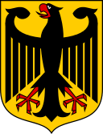
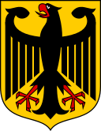

Federal Republic of Germany
Bundesrepublik Deutschland
Germany, officially the Federal Republic of Germany, is a country in Central Europe. It is the second-most populous country in Europe after Russia, and the most populous member state of the European Union. Germany is situated between the Baltic and North seas to the north, and the Alps to the south; covering an area of 357,022 square kilometres (137,847 sq mi), with a population of over 83 million within its 16 constituent states. It borders Denmark to the north, Poland and the Czech Republic to the east, Austria and Switzerland to the south, and France, Luxembourg, Belgium, and the Netherlands to the west. The nation's capital and largest city is Berlin, and its financial centre is Frankfurt; the largest urban area is the Ruhr.
 

Germany is a great power with a strong economy; it has the largest economy in Europe, the world's fourth-largest economy by nominal GDP, and the fifth-largest by PPP. As a global leader in several industrial, scientific and technological sectors, it is both the world's third-largest exporter and importer of goods. As a developed country, which ranks very high on the Human Development Index, it offers social security and a universal health care system, environmental protections, and a tuition-free university education. Germany is a member of the United Nations, NATO, the G7, the G20, and the OECD. It has the fourth-greatest number of UNESCO World Heritage Sites.